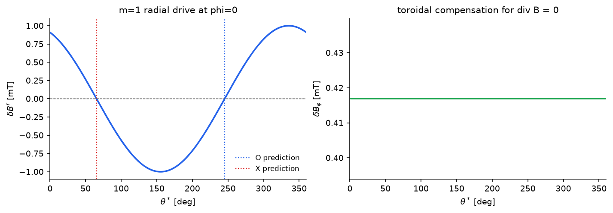
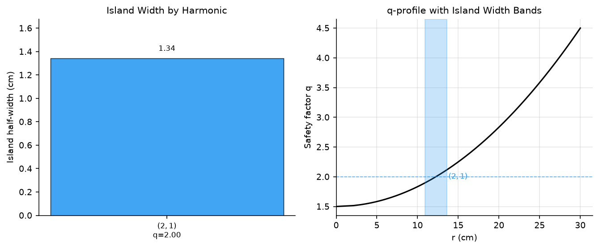
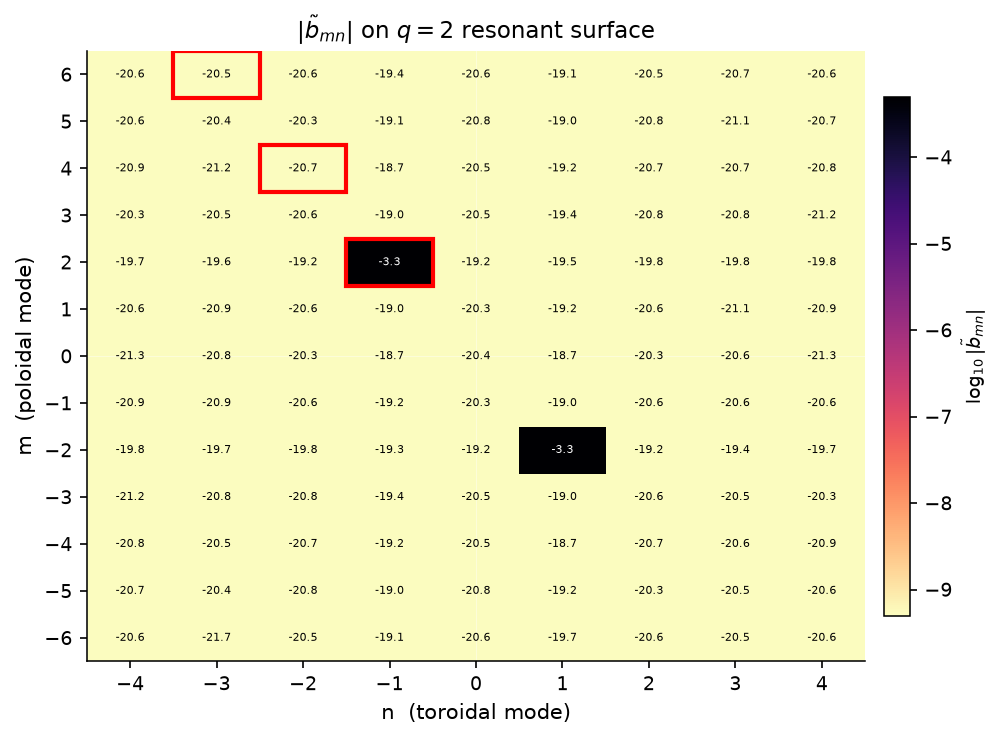
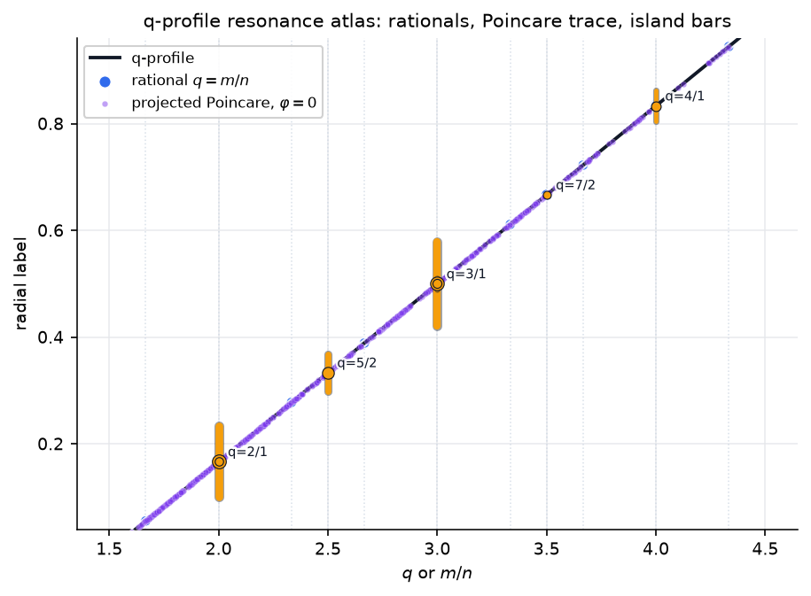
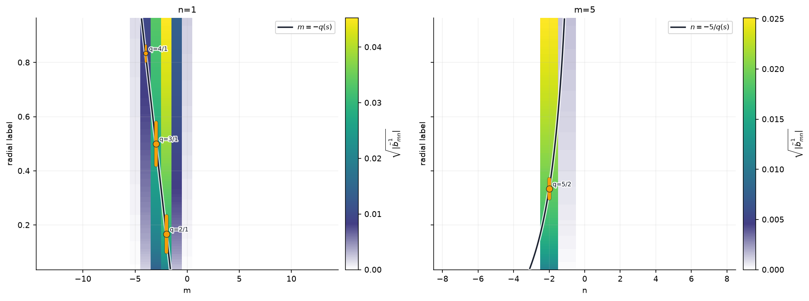
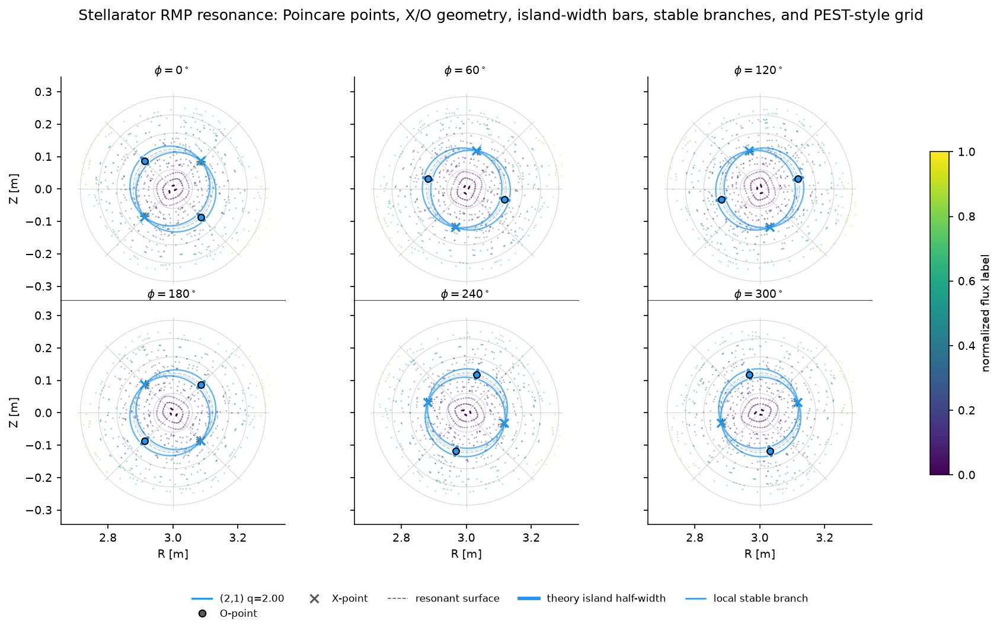

RMP 스텔러레이터 공명 분석#
이 노트북은 해석적 스텔러레이터 공명 기하를 위한 주 공개 워크플로입니다. 예전에 텍스트만 있던 두 튜토리얼을 하나의 시각적 계산으로 합쳤습니다.
해석적 스텔러레이터 평형을 만들고 Poincaré 단면을 추적한다.
공명 RMP Fourier 성분과 해석적 X/O 고정점을 계산한다.
원시 단면점을 기하로 승격한다: 교차점, 고정점 표식, 공명 곡면, O점 자기섬 폭 막대, 국소 안정 가지, 좌표 오버레이.
PEST식 격자와 함께 비섭동 단면과 섭동 단면을 비교한다.
자기섬 폭, Chirikov 중첩, \((m,n)\) 스펙트럼을 요약한다.
pyna.plot헬퍼로 현대적인 다중 단면 그림을 만든다.
이 노트북은 문서 게시 전에 로컬에서 실행하도록 설계되어 있습니다. GitHub Pages는 자기력선 추적을 다시 계산하지 않고 저장된 출력을 렌더링합니다.
[SETUP] 가져오기와 게시용 스타일#
[1]:
import sys
import json
import pathlib
import numpy as np
import matplotlib
import matplotlib.pyplot as plt
from matplotlib.colors import Normalize
PROJECT_ROOT = None
for candidate in [pathlib.Path.cwd(), *pathlib.Path.cwd().parents]:
if (candidate / 'pyna').is_dir() and (candidate / 'pyproject.toml').exists():
PROJECT_ROOT = candidate
break
if PROJECT_ROOT is not None and str(PROJECT_ROOT) not in sys.path:
sys.path.insert(0, str(PROJECT_ROOT))
%matplotlib inline
from matplotlib_inline.backend_inline import set_matplotlib_formats
set_matplotlib_formats('png')
plt.rcParams.update({
'font.family': 'DejaVu Sans',
'font.size': 9,
'axes.labelsize': 9,
'axes.titlesize': 10,
'figure.dpi': 150,
'text.usetex': False,
'axes.linewidth': 0.75,
'axes.spines.top': False,
'axes.spines.right': False,
'figure.facecolor': 'white',
'axes.facecolor': 'white',
})
from pyna.toroidal.equilibrium.stellarator import simple_stellarator
from pyna.toroidal.visual.RMP_spectrum import (
find_resonant_components_analytic,
radial_rmp_field_template,
compose_magnetic_perturbations,
circular_shell_divergence_diagnostic,
fieldline_velocity_spectrum_on_circular_surface,
rmp_nrmp_mode_rows,
sample_stellarator_cylindrical_field,
compare_cyna_fixed_points_for_component,
deformed_circular_section_rz,
deformed_surface_map_residual,
project_fixed_points_to_deformed_surface,
CoupledFixedPointSweep,
plot_perturbation_order_summary,
scan_nonresonant_residual_order,
scan_coupled_fixed_point_sweep,
scan_rmp_amplitude_order,
scan_rmp_phase_order,
scan_rmp_resolution_convergence,
compute_mn_spectrum,
plot_mn_heatmap,
ISLAND_CMAPS,
)
from pyna.toroidal.perturbation_spectrum import (
analyze_resonant_island_chains_multi_n,
nardon_radial_perturbation,
radial_perturbation_Fourier_spectrum,
)
from pyna.toroidal.visual.magnetic_spectrum import (
PoincareRationalTrace,
plot_radial_mode_heatmap,
plot_rational_surface_map,
plot_spectrum_bar3d,
plot_spectrum_heatmap,
)
from pyna.topo.poincare import poincare_from_fieldlines, ToroidalSection
from pyna.plot import (
draw_pest_grid,
draw_poincare_points,
draw_rmp_resonance_section,
plot_rmp_resonance_sections,
)
print('Setup complete. numpy', np.__version__, ' matplotlib', matplotlib.__version__)
Setup complete. numpy 2.4.6 matplotlib 3.11.0
[EQ] 스텔러레이터 평형 구성#
다음 성질을 갖는 해석적 single-helicity 스텔러레이터를 사용합니다.
주반경 \(R_0=3.0\) m, 부반경 \(r_0=0.3\) m, 축 위 자기장 \(B_0=2.5\) T
선형 \(q\) 프로파일: \(q_0=1.5\) (축) → \(q_1=4.5\) (LCFS)
helical ripple: \((m_h,n_h)=(3,3)\), \(\epsilon_h=0.03\)
안전 계수 프로파일 \(q(\psi)=q_0+(q_1-q_0)\psi\)는 \([1.5,4.5]\) 범위를 덮으므로 \(q=2/1,3/1,4/1\) 등 여러 공명이 플라즈마 안에 있습니다.
[2]:
eq = simple_stellarator(
R0=3.0, r0=0.3, B0=2.5,
q0=1.5, q1=4.5,
m_h=3, n_h=3, epsilon_h=0.03,
)
print(eq)
print(f'q range: [{eq.q0}, {eq.q1}]')
print(f'Resonant surface for (2,1): psi_res = {eq.resonant_psi(2,1)}')
print(f'Resonant surface for (4,2): psi_res = {eq.resonant_psi(4,2)}')
print(f'Resonant surface for (6,3): psi_res = {eq.resonant_psi(6,3)}')
# Convenience references
R0_eq = eq.R0
r0_eq = eq.r0
StellaratorSimple(R0=3.0 m, r0=0.3 m, B0=2.5 T, q=[1.5, 4.5], m_h=3, n_h=3, ε_h=0.03)
q range: [1.5, 4.5]
Resonant surface for (2,1): psi_res = [0.16666666666666666]
Resonant surface for (4,2): psi_res = [0.16666666666666666]
Resonant surface for (6,3): psi_res = [0.16666666666666666]
[RMP_NRMP_WORKFLOW] RMP/nRMP 분해#
자속면 위의 섭동 모드는 국소 자기력선 회전과 비교한 뒤에야 의미가 분명해집니다. Fourier 부호 규약을
으로 두면 국소 이탈량은
입니다.
항목 |
조건 |
기하학적 효과 |
pyna 워크플로 |
|---|---|---|---|
RMP |
|
자기섬 사슬을 열며, X/O 점, O점 폭 막대, 분리선 가지가 의미 있는 1차 객체가 된다 |
|
nRMP |
모든 비공명 모드에 대해 |
모든 비공명 모드가 매끄러운 자속면 변형과 자기력선 속도 변조에 더해진다 |
|
혼합 스펙트럼 |
둘 다 존재 |
공명 자기섬 기하가 전체 nRMP 변형 곡면 위에 놓인다 |
|
검증 |
벡터장이 물리적이어야 함 |
비솔레노이드 템플릿은 가짜 위상을 만들 수 있다 |
|
핵심 차이는 RMP 진단은 공명 행에 집중하지만, nRMP 응답은 모든 비공명 행의 전체 합이라는 점입니다.
기여도 표는 순위와 수렴 진단에 유용하지만, 모델 자체는 선택한 상위 성분이 아니라 전체 비공명 스펙트럼입니다.
[POINCARE_UNPERTURBED] φ=0에서 비섭동 Poincaré 단면#
비섭동 평형의 자기력선을 추적하고 \(\varphi=0\) 평면에서 교차점을 기록합니다. 결과는 원시 표본 기하입니다. 유용하지만 아직 위상 객체는 아닙니다. 뒤의 셀에서 공명 곡면, X/O 표식, 국소 안정 가지, PEST식 좌표 격자를 오버레이하여 승격 계층을 추가합니다.
교차점은 pyna_output/poincare_unperturbed.json에 캐시됩니다.
[3]:
CACHE_UNPERT = pathlib.Path('pyna_output/poincare_unperturbed.json')
CACHE_UNPERT.parent.mkdir(exist_ok=True)
if CACHE_UNPERT.exists():
_d = json.loads(CACHE_UNPERT.read_text())
R_cross_u = np.array(_d['R'])
Z_cross_u = np.array(_d['Z'])
print(f'Loaded from cache: {len(R_cross_u)} crossings')
else:
n_fieldlines = 15
n_turns = 50
dt = 0.08
t_max = n_turns * 2 * np.pi * eq.R0
R_starts = np.linspace(eq.R0 + 0.04*eq.r0, eq.R0 + 0.92*eq.r0, n_fieldlines)
start_pts = np.zeros((n_fieldlines, 3))
start_pts[:, 0] = R_starts
start_pts[:, 2] = 0.0
sections_u = [ToroidalSection(phi0=0.0)]
print(f'Tracing {n_fieldlines} field lines x {n_turns} turns (dt={dt}, t_max={t_max:.1f} m)...')
pmap_u = poincare_from_fieldlines(
eq.field_func,
start_pts,
sections_u,
t_max=t_max,
dt=dt,
)
arr_u = pmap_u.crossing_array(0)
R_cross_u = arr_u[:, 0]
Z_cross_u = arr_u[:, 1]
print(f'Computed: {len(R_cross_u)} crossings. Caching...')
CACHE_UNPERT.write_text(json.dumps({'R': R_cross_u.tolist(), 'Z': Z_cross_u.tolist()}))
print('Cached.')
fig_u, ax_u = plt.subplots(figsize=(4.7, 4.3), constrained_layout=True)
draw_pest_grid(ax_u, eq, alpha=0.22)
psi_pts = np.clip(((R_cross_u - eq.R0)**2 + Z_cross_u**2) / eq.r0**2, 0, 1)
draw_poincare_points(
ax_u,
R_cross_u,
Z_cross_u,
values=psi_pts,
cmap='viridis',
point_size=1.8,
alpha=0.50,
rasterized=False,
)
sm_u = plt.cm.ScalarMappable(cmap='viridis', norm=Normalize(0, 1))
fig_u.colorbar(sm_u, ax=ax_u, label='normalized flux label', shrink=0.82)
lim = 1.15 * eq.r0
ax_u.set_xlim(eq.R0 - lim, eq.R0 + lim)
ax_u.set_ylim(-lim, lim)
ax_u.set_aspect('equal')
ax_u.set_xlabel('R [m]')
ax_u.set_ylabel('Z [m]')
ax_u.set_title('Unperturbed Poincare section with PEST-style grid')
plt.show()
Loaded from cache: 735 crossings

[RMP_FIELD] RMP 섭동장 정의와 시각화#
기본 모드 \((m,n)=(2,1)\), 진폭 \(\delta B=1\) mT인 단일 모드 RMP를 적용합니다. 사용자에게 보이는 템플릿은
입니다. 하지만 radial_rmp_field_template는 국소 circular-shell 계량에서 전체 원통 좌표 벡터장이 무발산이 되도록 필요한 보상 폴로이달/토로이달 성분도 함께 추가합니다. 그림에 표시되는 반경 방향 투영은 여전히 익숙한 공명 구동 \(\delta B^r\)입니다.
같은 헬퍼는 중요한 m=1 가지도 지원합니다. 이 경우 반경 방향 발산에 theta와 무관한 부분이 포함되므로 토로이달 성분이 필요합니다.
[4]:
base_m, base_n = 2, 1
B_rmp = 1e-3 # 1 mT
delta_B_RMP = radial_rmp_field_template(
base_m,
base_n,
amplitude=B_rmp,
phase=0.0,
axis_R=eq.R0,
)
psi_res_21 = eq.resonant_psi(2, 1)[0]
r_res_21 = np.sqrt(psi_res_21) * eq.r0
print(f'q=2/1 resonant surface: psi={psi_res_21:.3f}, r={r_res_21*100:.1f} cm')
print(f'delta_B/B0 = {B_rmp/eq.B0*100:.3f}%')
r_check = np.linspace(0.08, 0.28, 7)
div_m2 = circular_shell_divergence_diagnostic(
delta_B_RMP,
axis_R=eq.R0,
r_values=r_check,
n_theta=192,
n_phi=192,
)
delta_B_m1_demo = radial_rmp_field_template(
1,
1,
amplitude=B_rmp,
phase=0.35,
axis_R=eq.R0,
)
div_m1 = circular_shell_divergence_diagnostic(
delta_B_m1_demo,
axis_R=eq.R0,
r_values=r_check,
n_theta=192,
n_phi=192,
)
print('Divergence diagnostics for the full vector perturbation:')
print('{:<8} {:>12} {:>12} {:>12}'.format('mode', 'max |div|', 'rms |div|', 'rel max'))
for label, diag in [('m=2', div_m2), ('m=1', div_m1)]:
print(f'{label:<8} {diag.max_abs:12.3e} {diag.rms:12.3e} {diag.relative_max:12.3e}')
theta_arr = np.linspace(0, 2*np.pi, 240)
R_res = eq.R0 + r_res_21 * np.cos(theta_arr)
Z_res = r_res_21 * np.sin(theta_arr)
fig_rmp, axes_rmp = plt.subplots(1, 3, figsize=(11.8, 3.0), constrained_layout=True)
for ax, phi_val, phi_label, color in [
(axes_rmp[0], 0.0, r'$\varphi=0$', '#2563eb'),
(axes_rmp[1], np.pi/4, r'$\varphi=\pi/4$', '#dc2626'),
]:
BR, BZ, _ = delta_B_RMP(R_res, Z_res, phi_val)
dBpsi = BR*np.cos(theta_arr) + BZ*np.sin(theta_arr)
ax.plot(np.degrees(theta_arr), dBpsi * 1e3, color=color, linewidth=1.8)
ax.fill_between(np.degrees(theta_arr), 0, dBpsi * 1e3, color=color, alpha=0.16, linewidth=0)
ax.axhline(0, color='0.25', lw=0.7, linestyle='--')
ax.set_xlabel(r'$\theta^*$ [deg]')
ax.set_title(f'RMP radial drive, {phi_label}')
ax.set_xlim(0, 360)
ax.set_xticks([0, 90, 180, 270, 360])
axes_rmp[0].set_ylabel(r'$\delta B^r$ [mT]')
axes_rmp[2].bar(['m=2', 'm=1'], [div_m2.relative_max, div_m1.relative_max], color=['#2563eb', '#16a34a'])
axes_rmp[2].set_yscale('log')
axes_rmp[2].set_ylabel('relative max divergence')
axes_rmp[2].set_title('solenoidal check')
axes_rmp[2].grid(True, axis='y', alpha=0.25)
plt.show()
print('Divergence-free RMP field defined and visualised.')
q=2/1 resonant surface: psi=0.167, r=12.2 cm
delta_B/B0 = 0.040%
Divergence diagnostics for the full vector perturbation:
mode max |div| rms |div| rel max
m=2 6.642e-06 3.148e-06 5.300e-04
m=1 1.804e-06 7.949e-07 9.946e-05

Divergence-free RMP field defined and visualised.
[M1_RMP] m=1 위상 제어 미니 사례#
m=1 섭동은 흔하므로 예외적 경우처럼 다루면 안 됩니다. 여기서는 같은 무발산 템플릿으로 단순한 q=1 평형에서 (1,1) 공명을 구동합니다. 짧은 계산 하나로 세 가지를 확인합니다: 장이 수치적으로 솔레노이드성인지, 추출한 b_{1,-1} 위상이 템플릿 위상을 따르는지, 예측한 O/X 점이 반경 방향 구동의 영점 교차점 위에 놓이는지.
[5]:
eq_m1 = simple_stellarator(
R0=eq.R0,
r0=eq.r0,
B0=eq.B0,
q0=0.75,
q1=1.25,
m_h=eq.m_h,
n_h=eq.n_h,
epsilon_h=0.0,
)
m1_phase = 0.43
delta_B_m1 = radial_rmp_field_template(
1,
1,
amplitude=B_rmp,
phase=m1_phase,
axis_R=eq_m1.R0,
)
psi_res_m1 = eq_m1.resonant_psi(1, 1)[0]
r_res_m1 = np.sqrt(psi_res_m1) * eq_m1.r0
m1_diag = circular_shell_divergence_diagnostic(
delta_B_m1,
axis_R=eq_m1.R0,
r_values=np.linspace(0.08, 0.28, 7),
n_theta=192,
n_phi=192,
)
component_m1 = find_resonant_components_analytic(
eq_m1,
delta_B_m1,
base_m=1,
base_n=1,
max_harmonic=1,
n_theta=128,
n_phi=64,
min_amplitude=1e-16,
)[0]
print(f'm=1 resonant surface: psi={psi_res_m1:.3f}, r={r_res_m1*100:.1f} cm')
print(f'arg b_(1,-1) = {np.angle(component_m1.b_mn):.6f} rad, template phase = {m1_phase:.6f} rad')
print(f'|b_(1,-1)| = {abs(component_m1.b_mn):.3e} T, expected about B_rmp/2 = {0.5*B_rmp:.3e} T')
print(f'm=1 divergence relative max = {m1_diag.relative_max:.3e}')
print(f'O-point theta = {np.degrees(component_m1.opoint_theta):.2f} deg')
print(f'X-point theta = {np.degrees(component_m1.xpoint_theta):.2f} deg')
theta_m1 = np.linspace(0, 2*np.pi, 361)
R_m1 = eq_m1.R0 + r_res_m1*np.cos(theta_m1)
Z_m1 = r_res_m1*np.sin(theta_m1)
BR_m1, BZ_m1, Bphi_m1 = delta_B_m1(R_m1, Z_m1, 0.0)
dBr_m1 = BR_m1*np.cos(theta_m1) + BZ_m1*np.sin(theta_m1)
fig_m1, (ax_m1, ax_m1b) = plt.subplots(1, 2, figsize=(9.4, 3.2), constrained_layout=True)
ax_m1.plot(np.degrees(theta_m1), dBr_m1*1e3, color='#2563eb', lw=1.8)
ax_m1.axhline(0, color='0.25', lw=0.7, ls='--')
ax_m1.axvline(np.degrees(component_m1.opoint_theta), color='#2563eb', lw=1.1, ls=':', label='O prediction')
ax_m1.axvline(np.degrees(component_m1.xpoint_theta), color='#dc2626', lw=1.1, ls=':', label='X prediction')
ax_m1.set_xlim(0, 360)
ax_m1.set_xlabel(r'$\theta^*$ [deg]')
ax_m1.set_ylabel(r'$\delta B^r$ [mT]')
ax_m1.set_title('m=1 radial drive at phi=0')
ax_m1.legend(frameon=False, fontsize=8)
ax_m1b.plot(np.degrees(theta_m1), Bphi_m1*1e3, color='#16a34a', lw=1.8)
ax_m1b.set_xlim(0, 360)
ax_m1b.set_xlabel(r'$\theta^*$ [deg]')
ax_m1b.set_ylabel(r'$\delta B_\varphi$ [mT]')
ax_m1b.set_title('toroidal compensation for div B = 0')
plt.show()
k=1: (1,1) ψ_res=0.500 q_res=1.000 |b_mn|=5.000e-04 phase_arg=24.6° w_ψ=0.1265 (2.68 cm) θ_O=245.4° θ_X=65.4°
m=1 resonant surface: psi=0.500, r=21.2 cm
arg b_(1,-1) = 0.430000 rad, template phase = 0.430000 rad
|b_(1,-1)| = 5.000e-04 T, expected about B_rmp/2 = 5.000e-04 T
m=1 divergence relative max = 9.946e-05
O-point theta = 245.36 deg
X-point theta = 65.36 deg

[RESONANT_COMPONENTS] 공명 Fourier 성분 찾기#
각 공명 자속면에서 RMP 장을 2D FFT로 분해하고, 공명 \((m_k,n_k)=k\times(2,1)\) harmonic의 진폭을 추출합니다. 자기섬 반폭은 Rutherford 공식으로 주어집니다.
결과는 pyna_output/rmp_components.json에 캐시됩니다.
[6]:
CACHE_COMP = pathlib.Path('pyna_output/rmp_components.json')
CACHE_COMP.parent.mkdir(exist_ok=True)
print('Computing resonant components (n_theta=32, n_phi=16)...')
components = find_resonant_components_analytic(
eq, delta_B_RMP, base_m=base_m, base_n=base_n,
max_harmonic=3, n_theta=32, n_phi=16,
)
print(f'Found {len(components)} resonant components.')
# Cache as JSON
_comp_data = [{
'm': c.m, 'n': c.n, 'harmonic_order': c.harmonic_order,
'b_mn_real': float(c.b_mn.real), 'b_mn_imag': float(c.b_mn.imag),
'psi_res': float(c.psi_res), 'q_res': float(c.q_res),
'half_width_psi': float(c.half_width_psi),
'half_width_r': float(c.half_width_r),
'opoint_theta': float(c.opoint_theta),
'xpoint_theta': float(c.xpoint_theta),
'q_prime_sign': int(c.q_prime_sign),
} for c in components]
CACHE_COMP.write_text(json.dumps(_comp_data, indent=2))
print('Cached to', CACHE_COMP)
# Print table
print()
print(f'{"k":>3} {"(m,n)":>8} {"psi_res":>8} {"q_res":>6} {"b_mn|":>10} {"w_psi":>8} {"w_r (cm)":>10} {"theta_O":>8} {"theta_X":>8}')
print('-'*80)
for c in components:
print(f'{c.harmonic_order:>3} ({c.m},{c.n}){"":>4} {c.psi_res:>8.4f} {c.q_res:>6.3f} {abs(c.b_mn):>10.3e} {c.half_width_psi:>8.4f} {c.half_width_r*100:>10.2f} {np.degrees(c.opoint_theta):>8.1f} {np.degrees(c.xpoint_theta):>8.1f}')
Computing resonant components (n_theta=32, n_phi=16)...
k=1: (2,1) ψ_res=0.167 q_res=2.000 |b_mn|=5.000e-04 phase_arg=-0.0° w_ψ=0.0365 (1.34 cm) θ_O=135.0° θ_X=45.0°
k=2: (4,2) — |b_mn|=4.57e-21 below threshold
k=3: (6,3) — |b_mn|=1.98e-20 below threshold
Found 1 resonant components.
Cached to pyna_output/rmp_components.json
k (m,n) psi_res q_res b_mn| w_psi w_r (cm) theta_O theta_X
--------------------------------------------------------------------------------
1 (2,1) 0.1667 2.000 5.000e-04 0.0365 1.34 135.0 45.0
[POINCARE_PERTURBED] 기하 승격: 교차점 -> X/O 점 -> 다양체#
섭동 추적은 표본 Poincaré 점을 제공합니다. 해석적 RMP 스펙트럼은 고정점과 자기섬 폭 예측을 제공합니다. pyna.plot.draw_rmp_resonance_section은 이 둘을 하나의 단면 기하로 결합합니다.
자속 라벨로 색칠한 Poincaré 점
PEST식 \((S,\theta^*)\) 격자선
각 harmonic의 공명 곡면
해석적 고정점 공식에서 얻은 O점과 X점
공명 Fourier 진폭으로 길이가 정해지는 O점 반경 방향 막대
X점에서 생기는 국소 안정 분리선 가지
이는 일반 기하 워크플로와 같은 승격 아이디어입니다. 원시 표본은 명시적인 모델 또는 진단이 승격을 정당화하기 전까지 지속적 기하 객체 및 오버레이와 구분해 둡니다.
[7]:
# Perturbed field_func
# --------------------
def field_func_perturbed(rzphi_1d):
"""Unit-tangent dRZphi/ds for the field-line ODE with RMP added."""
rzphi_1d = np.asarray(rzphi_1d, dtype=float)
R, Z, phi = rzphi_1d[0], rzphi_1d[1], rzphi_1d[2]
theta = np.arctan2(Z, R - R0_eq)
psi = eq.psi_ax(R, Z)
q = float(eq.q_of_psi(psi))
r_minor = np.sqrt((R - R0_eq)**2 + Z**2)
B_phi = eq.B0 * eq.R0 / R
B_pol = B_phi * r_minor / (R * max(abs(q), 1e-3))
if r_minor > 1e-10:
BR0 = -B_pol * np.sin(theta)
BZ0 = B_pol * np.cos(theta)
else:
BR0 = BZ0 = 0.0
delta_BR_eq = eq.epsilon_h * eq.B0 * psi * np.cos(eq.m_h * theta - eq.n_h * phi)
db = delta_B_RMP(R, Z, phi)
BR_tot = BR0 + delta_BR_eq + db[0]
BZ_tot = BZ0 + db[1]
B_phi_tot = B_phi + db[2]
B_mag = np.sqrt(BR_tot**2 + BZ_tot**2 + B_phi_tot**2) + 1e-30
return np.array([BR_tot/B_mag, BZ_tot/B_mag, B_phi_tot/(R*B_mag)])
CACHE_PERT = pathlib.Path('pyna_output/poincare_perturbed_divfree.json')
CACHE_PERT.parent.mkdir(exist_ok=True)
phi_sections_deg = [0, 60, 120, 180, 240, 300]
phi_sections = np.array(phi_sections_deg) * np.pi / 180.0
if CACHE_PERT.exists():
_d = json.loads(CACHE_PERT.read_text())
all_sections_data = _d['sections']
print(f'Loaded perturbed Poincare from cache ({len(all_sections_data)} sections).')
else:
sections_p = [ToroidalSection(phi0=ph) for ph in phi_sections]
n_fieldlines, n_turns, dt = 15, 50, 0.08
t_max = n_turns * 2 * np.pi * eq.R0
start_pts = np.zeros((n_fieldlines, 3))
start_pts[:, 0] = np.linspace(eq.R0 + 0.04*eq.r0, eq.R0 + 0.92*eq.r0, n_fieldlines)
print(f'Tracing {n_fieldlines} field lines x {n_turns} turns (t_max={t_max:.1f} m)...')
pmap_p = poincare_from_fieldlines(field_func_perturbed, start_pts, sections_p, t_max=t_max, dt=dt)
all_sections_data = []
for i_sec, phi_deg in enumerate(phi_sections_deg):
arr = pmap_p.crossing_array(i_sec)
print(f' phi={phi_deg} deg: {len(arr)} crossings')
all_sections_data.append({'R': arr[:, 0].tolist() if len(arr) else [], 'Z': arr[:, 1].tolist() if len(arr) else []})
CACHE_PERT.write_text(json.dumps({'phi_sections_deg': phi_sections_deg, 'sections': all_sections_data}))
print('Computed and cached.')
R_cross_p0 = np.array(all_sections_data[0]['R'])
Z_cross_p0 = np.array(all_sections_data[0]['Z'])
print(f'phi=0 section: {len(R_cross_p0)} crossings')
fig2, (axL, axR) = plt.subplots(1, 2, figsize=(9.4, 4.2), constrained_layout=True)
# The low-level plot layers are independently selectable by name.
draw_rmp_resonance_section(
axL,
R_cross_u,
Z_cross_u,
eq=eq,
components=[],
phi=0.0,
title='Unperturbed: sampled flux surfaces',
overlays=('pest_grid', 'poincare'),
point_size=1.8,
point_alpha=0.46,
)
draw_rmp_resonance_section(
axR,
R_cross_p0,
Z_cross_p0,
eq=eq,
components=components,
phi=0.0,
colors=ISLAND_CMAPS,
title='Perturbed: RMP resonance geometry',
overlays=('pest_grid', 'poincare', 'resonant_surfaces', 'stable_branches', 'island_width_bars', 'xo'),
point_size=1.8,
point_alpha=0.46,
)
fig2.suptitle(
f'RMP Poincare geometry -- base mode ({base_m},{base_n}), '
f'delta B/B0={B_rmp/eq.B0*100:.2f}%',
fontsize=11,
)
plt.show()
Loaded perturbed Poincare from cache (6 sections).
phi=0 section: 735 crossings

[CYNA_FIXED_POINTS] Newton 고정점과 RMP 스펙트럼 위상 비교#
RMP 스펙트럼은 1차 O/X점 위상을 예측합니다. 여기서는 가속된 cyna Newton 사상으로 그 초깃값을 참 주기 궤도 고정점으로 정제한 뒤 위상 오차를 측정합니다. RMP 단독 경우는 코드 건전성 점검이고, 해석적 helical ripple을 추가하면 1차 스펙트럼이 의도적으로 무시하는 유한 진폭/모델 이동이 나타납니다.
[8]:
# Build a physical cylindrical field for cyna and compare Newton fixed points.
def row_newton_theta_deg(row, eq_case):
axis_R, axis_Z = eq_case.magnetic_axis
theta = np.arctan2(row.newton_Z - axis_Z, row.newton_R - axis_R) % (2*np.pi)
return float(np.degrees(theta))
cyna_rows_by_case = {}
cyna_eq_by_case = {}
if components:
eq_rmp_only = simple_stellarator(
R0=eq.R0, r0=eq.r0, B0=eq.B0,
q0=eq.q0, q1=eq.q1,
m_h=eq.m_h, n_h=eq.n_h, epsilon_h=0.0,
)
try:
for case_label, eq_case in [
('RMP only', eq_rmp_only),
('RMP + analytic helical ripple', eq),
]:
print(f'Building cyna field: {case_label}')
field_case = sample_stellarator_cylindrical_field(
eq_case,
delta_B_RMP,
nR=128,
nPhi=128,
label=f'analytic_rmp_for_cyna_{case_label.replace(" ", "_").lower()}',
)
rows = compare_cyna_fixed_points_for_component(
field_case,
components[0],
eq_case,
DPhi=0.015,
max_iter=80,
tol=1e-11,
n_threads=4,
)
cyna_rows_by_case[case_label] = rows
cyna_eq_by_case[case_label] = eq_case
except ImportError as exc:
print('cyna fixed-point comparison skipped:', exc)
if cyna_rows_by_case:
print()
header = '{:<30} {:>4} {:>6} {:>9} {:>9} {:>10} {:>11} {:>11} {:>11}'.format(
'case', 'kind', 'branch', 'theta*', 'theta_N', 'dtheta', 'm*dtheta', 'dr [cm]', 'residual'
)
print(header)
print('-' * len(header))
for case_label, rows in cyna_rows_by_case.items():
eq_case = cyna_eq_by_case[case_label]
for row in rows:
theta_n = row_newton_theta_deg(row, eq_case)
print('{:<30} {:>4} {:>6d} {:>9.3f} {:>9.3f} {:>10.4f} {:>11.4f} {:>11.4f} {:>11.1e}'.format(
case_label,
row.predicted_kind + '/' + (row.newton_kind or '?'),
row.branch,
row.predicted_theta_deg,
theta_n,
row.theta_error_deg,
row.helical_phase_error_deg,
row.radial_error_cm,
row.residual,
))
max_dtheta = max(abs(row.theta_error_deg) for row in rows)
max_helical = max(abs(row.helical_phase_error_deg) for row in rows)
print(f' -> {case_label}: max |dtheta|={max_dtheta:.4f} deg, max |m*dtheta|={max_helical:.4f} deg')
if cyna_rows_by_case:
fig_cmp, axes_cmp = plt.subplots(1, len(cyna_rows_by_case), figsize=(9.2, 4.0), constrained_layout=True)
axes_cmp = np.atleast_1d(axes_cmp)
for ax, (case_label, rows) in zip(axes_cmp, cyna_rows_by_case.items()):
eq_case = cyna_eq_by_case[case_label]
draw_pest_grid(ax, eq_case, alpha=0.18)
r_res = np.sqrt(components[0].psi_res) * eq_case.r0
theta_ring = np.linspace(0, 2*np.pi, 361)
ax.plot(eq_case.R0 + r_res*np.cos(theta_ring), r_res*np.sin(theta_ring),
color='0.25', lw=0.9, ls='--', alpha=0.65)
for row in rows:
color = '#2563eb' if row.predicted_kind == 'O' else '#dc2626'
marker = 'o' if row.predicted_kind == 'O' else 'X'
ax.plot([row.predicted_R, row.newton_R], [row.predicted_Z, row.newton_Z],
color=color, lw=1.0, alpha=0.65)
ax.scatter(row.predicted_R, row.predicted_Z, marker=marker, s=70,
facecolors='none', edgecolors=color, linewidths=1.3, zorder=5)
ax.scatter(row.newton_R, row.newton_Z, marker=marker, s=42,
color=color, edgecolors='white', linewidths=0.5, zorder=6)
lim = 1.12 * eq_case.r0
ax.set_xlim(eq_case.R0 - lim, eq_case.R0 + lim)
ax.set_ylim(-lim, lim)
ax.set_aspect('equal')
ax.set_xlabel('R [m]')
ax.set_ylabel('Z [m]')
max_dtheta = max(abs(row.theta_error_deg) for row in rows)
ax.set_title(f'{case_label}\nmax |dtheta| = {max_dtheta:.3f} deg')
fig_cmp.suptitle('cyna Newton fixed points versus RMP spectrum phase prediction', fontsize=11)
plt.show()
Building cyna field: RMP only
Building cyna field: RMP + analytic helical ripple
case kind branch theta* theta_N dtheta m*dtheta dr [cm] residual
-------------------------------------------------------------------------------------------------------------
RMP only O/O 0 315.000 314.940 -0.0602 -0.1203 0.2298 1.4e-14
RMP only O/O 1 135.000 135.059 0.0588 0.1176 0.2303 9.2e-15
RMP only X/X 0 45.000 44.940 -0.0600 -0.1200 -0.2520 4.7e-14
RMP only X/X 1 225.000 225.059 0.0588 0.1176 -0.2515 1.7e-14
-> RMP only: max |dtheta|=0.0602 deg, max |m*dtheta|=0.1203 deg
RMP + analytic helical ripple O/O 0 315.000 318.588 3.5877 7.1754 1.2050 5.0e-12
RMP + analytic helical ripple O/O 1 135.000 138.420 3.4195 6.8391 1.1869 2.2e-15
RMP + analytic helical ripple X/X 0 45.000 47.043 2.0428 4.0857 -0.2143 2.7e-12
RMP + analytic helical ripple X/X 1 225.000 226.940 1.9400 3.8801 -0.2445 2.3e-12
-> RMP + analytic helical ripple: max |dtheta|=3.5877 deg, max |m*dtheta|=7.1754 deg

[NONRESONANT_DEFORMATION] 비공명 ripple을 자속면 변형으로 보기#
이 해석 평형의 helical ripple은 (m,n)=(2,1) 자기섬을 여는 공명 RMP 성분이 아닙니다. 그래도 가까운 자속면의 기하를 바꿉니다. Newton 고정점을 변형되지 않은 원형 곡면과 비교하면, 이 매끄러운 변위가 인위적인 위상 오차처럼 보입니다.
여기서는 helical-ripple 기여를 자기력선 ODE에서 표본화합니다.
F_r와 F_theta를 Fourier 변환하고 모든 비공명 계수에 대한 homological equation을 풉니다. 응답 객체는 전체 변형과 기여도 순위를 모두 보관합니다. 순위는 진단이고, 아래에서 쓰는 변형은 전체 합산 nRMP 응답입니다.
[9]:
def helical_ripple_delta_B(eq_case):
"""Return the analytic helical-ripple contribution used by simple_stellarator."""
def delta_B_helical(R, Z, phi):
R_arr = np.asarray(R, dtype=float)
Z_arr = np.asarray(Z, dtype=float)
phi_arr = np.asarray(phi, dtype=float)
theta = np.arctan2(Z_arr, R_arr - eq_case.R0)
psi = eq_case.psi_ax(R_arr, Z_arr)
dBR = eq_case.epsilon_h * eq_case.B0 * psi * np.cos(eq_case.m_h * theta - eq_case.n_h * phi_arr)
return np.array([
dBR,
np.zeros_like(dBR, dtype=float),
np.zeros_like(dBR, dtype=float),
])
return delta_B_helical
def helical_velocity_response(eq_case, psi_res, n_theta=256, n_phi=256, include_shear=False):
velocity = fieldline_velocity_spectrum_on_circular_surface(
eq_case,
helical_ripple_delta_B(eq_case),
psi_res,
n_theta=n_theta,
n_phi=n_phi,
m_max=8,
n_max=8,
min_amplitude=1e-12,
)
return velocity.nonresonant_response(include_shear=include_shear)
def helical_velocity_deformation(eq_case, psi_res, n_theta=256, n_phi=256, include_shear=False):
response = helical_velocity_response(
eq_case,
psi_res,
n_theta=n_theta,
n_phi=n_phi,
include_shear=include_shear,
)
return response.deformation, response.velocity.r_minor, response.velocity
case_label = 'RMP + analytic helical ripple'
if components and case_label in cyna_rows_by_case:
rows = cyna_rows_by_case[case_label]
eq_case = cyna_eq_by_case[case_label]
response_helical = helical_velocity_response(eq_case, components[0].psi_res)
deformation = response_helical.deformation
velocity_helical = response_helical.velocity
r_res = velocity_helical.r_minor
projected_rows = project_fixed_points_to_deformed_surface(
rows,
eq_case,
deformation,
r_minor=r_res,
theta_window=0.35,
)
print(
'nRMP total response uses '
f'{response_helical.n_nonresonant_modes} non-resonant modes '
f'and excludes {response_helical.n_resonant_modes} resonant modes.'
)
print('Largest nRMP response contributors; these rank the sum but do not replace it:')
print('{:>8} {:>12} {:>14} {:>14}'.format('(m,n)', 'detuning', '|delta_r_mn| cm', 'cum frac'))
for contrib in response_helical.contribution_rows(top=6):
print('({:>2d},{:>2d}) {:>12.3e} {:>14.4f} {:>14.3f}'.format(
contrib.m,
contrib.n,
contrib.detuning,
100.0 * contrib.radial_response_weight,
contrib.cumulative_fraction,
))
print()
raw_max = max(abs(row.theta_error_deg) for row in rows)
corrected_max = max(abs(row.theta_error_deg) for row in projected_rows)
nearest_max = max(row.distance_cm for row in projected_rows)
print(f'Raw circular-surface max |dtheta|: {raw_max:.4f} deg')
print(f'Deformed-surface-coordinate max |dtheta|: {corrected_max:.4f} deg')
print(f'Max Newton-to-deformed-section distance: {nearest_max:.3f} cm')
print()
header = '{:<4} {:>6} {:>12} {:>16} {:>13}'.format(
'kind', 'branch', 'raw dtheta', 'deformed dtheta', 'distance [cm]'
)
print(header)
print('-' * len(header))
for row, proj in zip(rows, projected_rows):
print('{:<4} {:>6d} {:>12.4f} {:>16.4f} {:>13.3f}'.format(
row.predicted_kind,
row.branch,
row.theta_error_deg,
proj.theta_error_deg,
proj.distance_cm,
))
theta_line = np.linspace(0.0, 2*np.pi, 721)
R_circ = eq_case.R0 + r_res*np.cos(theta_line)
Z_circ = r_res*np.sin(theta_line)
R_def, Z_def = deformed_circular_section_rz(eq_case, r_res, deformation, theta_line)
fig_def, ax_def = plt.subplots(figsize=(5.2, 4.8), constrained_layout=True)
draw_pest_grid(ax_def, eq_case, alpha=0.16)
ax_def.plot(R_circ, Z_circ, color='0.35', lw=0.9, ls='--', label='undeformed q=2 surface')
ax_def.plot(R_def, Z_def, color='#16a34a', lw=1.8, label='total nRMP-deformed surface')
for row, proj in zip(rows, projected_rows):
color = '#2563eb' if row.predicted_kind == 'O' else '#dc2626'
marker = 'o' if row.predicted_kind == 'O' else 'X'
ax_def.plot([row.predicted_R, row.newton_R], [row.predicted_Z, row.newton_Z],
color=color, lw=0.8, alpha=0.35)
ax_def.plot([proj.closest_R, row.newton_R], [proj.closest_Z, row.newton_Z],
color=color, lw=1.1, ls=':', alpha=0.9)
ax_def.scatter(row.predicted_R, row.predicted_Z, marker=marker, s=72,
facecolors='none', edgecolors=color, linewidths=1.2, zorder=5)
ax_def.scatter(proj.closest_R, proj.closest_Z, marker='D', s=42,
color='#16a34a', edgecolors='white', linewidths=0.45, zorder=6)
ax_def.scatter(row.newton_R, row.newton_Z, marker=marker, s=44,
color=color, edgecolors='white', linewidths=0.5, zorder=7)
lim = 1.12 * eq_case.r0
ax_def.set_xlim(eq_case.R0 - lim, eq_case.R0 + lim)
ax_def.set_ylim(-lim, lim)
ax_def.set_aspect('equal')
ax_def.set_xlabel('R [m]')
ax_def.set_ylabel('Z [m]')
ax_def.set_title('Total nRMP response explains most apparent phase shift')
ax_def.legend(frameon=False, loc='upper right', fontsize=8)
plt.show()
TT_h, PP_h, dr_h, dtheta_h = response_helical.real_fields()
counts_h, cumulative_h = response_helical.cumulative_contribution()
theta_deg_h = np.degrees(velocity_helical.theta)
phi_deg_h = np.degrees(velocity_helical.phi)
fig_flow, axes_flow = plt.subplots(1, 4, figsize=(13.8, 3.2), constrained_layout=True)
panels = [
(velocity_helical.radial_velocity * 100.0, r'$dr/d\varphi$ [cm/rad]', 'radial flow modulation', 'coolwarm'),
(velocity_helical.poloidal_velocity, r'$\delta(d\theta/d\varphi)$', 'poloidal speed modulation', 'PuOr'),
(dr_h * 100.0, r'$\delta r$ [cm]', 'total nRMP displacement', 'BrBG'),
]
for ax, (data, cbar_label, title, cmap) in zip(axes_flow[:3], panels):
vmax = np.nanmax(np.abs(data))
im = ax.pcolormesh(
theta_deg_h,
phi_deg_h,
data,
shading='auto',
cmap=cmap,
vmin=-vmax,
vmax=vmax,
)
ax.set_xlabel(r'$\theta^*$ [deg]')
ax.set_ylabel(r'$\varphi$ [deg]')
ax.set_title(title)
fig_flow.colorbar(im, ax=ax, label=cbar_label, shrink=0.85)
axes_flow[3].plot(counts_h, cumulative_h, color='#111827', lw=1.8)
axes_flow[3].set_ylim(0, 1.02)
axes_flow[3].set_xlabel('non-resonant modes included')
axes_flow[3].set_ylabel(r'cumulative $|\delta r_{mn}|^2$')
axes_flow[3].set_title('nRMP contribution accumulation')
axes_flow[3].grid(True, alpha=0.25)
plt.show()
else:
print('Non-resonant deformation check skipped because cyna rows are unavailable.')
nRMP total response uses 12 non-resonant modes and excludes 2 resonant modes.
Largest nRMP response contributors; these rank the sum but do not replace it:
(m,n) detuning |delta_r_mn| cm cum frac
(-4, 3) 1.000e+00 0.3755 0.397
( 4,-3) -1.000e+00 0.3755 0.794
(-2, 3) 2.000e+00 0.1877 0.893
( 2,-3) -2.000e+00 0.1877 0.992
(-5, 3) 5.000e-01 0.0306 0.995
( 5,-3) -5.000e-01 0.0306 0.997
Raw circular-surface max |dtheta|: 3.5877 deg
Deformed-surface-coordinate max |dtheta|: 1.4748 deg
Max Newton-to-deformed-section distance: 0.822 cm
kind branch raw dtheta deformed dtheta distance [cm]
-------------------------------------------------------
O 0 3.5877 0.6159 0.822
O 1 3.4195 0.7933 0.783
X 0 2.0428 -1.4748 0.250
X 1 1.9400 -1.1567 0.196


[MIXED_SPECTRUM] 한 곡면에서 혼합 RMP/nRMP 워크플로#
실제 섭동은 깔끔한 harmonic 하나만 포함하는 경우가 드뭅니다. 이 예제는 공명 (2,1) RMP와 두 비공명 성분을 겹칩니다. 그중 하나는 m=1 항입니다. 모드 표는 표본화된 속도 스펙트럼을 분류하지만 진단일 뿐입니다. nRMP 계산의 본체는 전체 응답 객체이며, 모든 비공명 행을 합산한 뒤 매끄러운 변위와 속도 변조를 그립니다.
[10]:
mixed_delta_B = compose_magnetic_perturbations(
delta_B_RMP,
radial_rmp_field_template(3, 1, amplitude=2.0e-4, phase=0.20, axis_R=eq.R0),
radial_rmp_field_template(1, 1, amplitude=1.5e-4, phase=0.40, axis_R=eq.R0),
)
mixed_velocity = fieldline_velocity_spectrum_on_circular_surface(
eq,
mixed_delta_B,
psi_res_21,
n_theta=160,
n_phi=128,
m_max=5,
n_max=4,
min_amplitude=1e-13,
)
mixed_rows = rmp_nrmp_mode_rows(
mixed_velocity.radial_spectrum,
mixed_velocity.iota,
resonance_tol=1e-10,
top=12,
min_amplitude=1e-8,
)
mixed_response = mixed_velocity.nonresonant_response(include_shear=True, resonance_tol=1e-10)
print(f'Local iota on q=2 surface: {mixed_velocity.iota:.6f}')
print(
'Total nRMP response uses '
f'{mixed_response.n_nonresonant_modes} non-resonant modes; '
f'{mixed_response.n_resonant_modes} resonant modes are left for island analysis.'
)
print()
print('RMP/nRMP mode classification diagnostic:')
print('{:<5} {:>8} {:>12} {:>12} {:>12}'.format('kind', '(m,n)', 'detuning', '|F_r mn|', 'phase [deg]'))
print('-' * 56)
for row in mixed_rows:
print('{:<5} ({:>2d},{:>2d}) {:>12.3e} {:>12.3e} {:>12.2f}'.format(
row.kind,
row.m,
row.n,
row.detuning,
row.amplitude,
row.phase_deg,
))
print()
print('Largest contributors to the total nRMP radial response:')
print('{:>8} {:>12} {:>14} {:>14}'.format('(m,n)', 'detuning', '|delta_r_mn| cm', 'cum frac'))
for contrib in mixed_response.contribution_rows(top=8):
print('({:>2d},{:>2d}) {:>12.3e} {:>14.4f} {:>14.3f}'.format(
contrib.m,
contrib.n,
contrib.detuning,
100.0 * contrib.radial_response_weight,
contrib.cumulative_fraction,
))
mixed_deformation = mixed_response.deformation
TT_mix, PP_mix, nonres_dr_mix, nonres_dtheta_mix = mixed_response.real_fields()
counts_mix, cumulative_mix = mixed_response.cumulative_contribution()
theta_deg_mix = np.degrees(mixed_velocity.theta)
phi_deg_mix = np.degrees(mixed_velocity.phi)
fig_mix, axes_mix = plt.subplots(1, 4, figsize=(13.8, 3.2), constrained_layout=True)
panels = [
(mixed_velocity.radial_velocity * 100.0, r'$dr/d\varphi$ [cm/rad]', 'mixed radial velocity', 'coolwarm'),
(mixed_velocity.poloidal_velocity, r'$\delta(d\theta/d\varphi)$', 'mixed poloidal-speed modulation', 'PuOr'),
(nonres_dr_mix * 100.0, r'$\delta r_\mathrm{nRMP}$ [cm]', 'total non-resonant displacement', 'BrBG'),
]
for ax, (data, label, title, cmap) in zip(axes_mix[:3], panels):
vmax = np.nanmax(np.abs(data))
im = ax.pcolormesh(
theta_deg_mix,
phi_deg_mix,
data,
shading='auto',
cmap=cmap,
vmin=-vmax,
vmax=vmax,
)
ax.set_xlabel(r'$\theta^*$ [deg]')
ax.set_ylabel(r'$\varphi$ [deg]')
ax.set_title(title)
fig_mix.colorbar(im, ax=ax, label=label, shrink=0.86)
axes_mix[3].plot(counts_mix, cumulative_mix, color='#111827', lw=1.8)
axes_mix[3].set_ylim(0, 1.02)
axes_mix[3].set_xlabel('non-resonant modes included')
axes_mix[3].set_ylabel(r'cumulative $|\delta r_{mn}|^2$')
axes_mix[3].set_title('response accumulation')
axes_mix[3].grid(True, alpha=0.25)
plt.show()
Local iota on q=2 surface: 0.500000
Total nRMP response uses 12 non-resonant modes; 2 resonant modes are left for island analysis.
RMP/nRMP mode classification diagnostic:
kind (m,n) detuning |F_r mn| phase [deg]
--------------------------------------------------------
RMP (-2, 1) 0.000e+00 6.087e-04 -0.23
RMP ( 2,-1) 0.000e+00 6.087e-04 0.23
nRMP (-3, 1) -5.000e-01 1.442e-04 -9.53
nRMP ( 3,-1) 5.000e-01 1.442e-04 9.53
nRMP (-1, 1) 5.000e-01 1.131e-04 -18.07
nRMP ( 1,-1) -5.000e-01 1.131e-04 18.07
nRMP ( 4,-1) 1.000e+00 5.144e-06 10.91
nRMP (-4, 1) -1.000e+00 5.144e-06 -10.91
nRMP ( 0,-1) -1.000e+00 3.906e-06 21.49
nRMP ( 0, 1) 1.000e+00 3.906e-06 -21.49
nRMP (-5, 1) -1.500e+00 5.000e-08 -11.46
nRMP ( 5,-1) 1.500e+00 5.000e-08 11.46
Largest contributors to the total nRMP radial response:
(m,n) detuning |delta_r_mn| cm cum frac
(-3, 1) -5.000e-01 0.0288 0.310
( 3,-1) 5.000e-01 0.0288 0.619
(-1, 1) 5.000e-01 0.0226 0.809
( 1,-1) -5.000e-01 0.0226 1.000
( 4,-1) 1.000e+00 0.0005 1.000
(-4, 1) -1.000e+00 0.0005 1.000
( 0, 1) 1.000e+00 0.0004 1.000
( 0,-1) -1.000e+00 0.0004 1.000

[ORDER_ANALYSIS] 섭동 차수 점검#
재사용 가능한 워크플로는 이제 몇 개의 작은 헬퍼에 들어 있습니다. scan_nonresonant_residual_order, scan_rmp_amplitude_order, scan_rmp_phase_order, scan_rmp_resolution_convergence, plot_perturbation_order_summary.
Fourier 규약이 고정되면 예상 차수는 단순합니다.
nRMP 곡면 형상 잔차: 1차 변형은
O(k^2)사상 잔차를 남겨야 한다.RMP 공명 계수:
delta B = k f이면 Fourier 선형성 때문에|b_{m,-n}| ~ k이다.자기섬 폭: Rutherford/Nardon pendulum width는
w ~ sqrt(|b_{m,-n}|)로 스케일링하므로w ~ k^{1/2}이다.X/O 위상: 위상은 진폭이 아니라
arg(b_{m,-n})에 의해 결정된다. 정확한 관계는m*Delta theta_O + Delta arg(b_{m,-n}) = 0이다.
위상 제어 차수에는 무발산 템플릿 radial_rmp_field_template를 사용합니다. 이 템플릿의 위상 매개변수는 중요한 m=1 경우까지 포함해 div(delta B)=0을 보존하면서 공명 계수 위상을 바꿉니다. 의도적으로 약한 비선형 제어 위상 alpha(k)=k+eta*k^2를 시험하므로, 1차 원시 k 법칙에 대한 잔차는 O(k^2)로 스케일링해야 합니다.
[11]:
def component_for_rmp_template(amplitude=1.0e-3, phase=0.0, n_theta=128, n_phi=64):
return find_resonant_components_analytic(
eq,
radial_rmp_field_template(base_m, base_n, amplitude=amplitude, phase=phase, axis_R=eq.R0),
base_m=base_m,
base_n=base_n,
max_harmonic=1,
n_theta=n_theta,
n_phi=n_phi,
min_amplitude=1e-16,
verbose=False,
)[0]
def deformed_torus_map_residual(epsilon_h, n_alpha=12):
eq_case = simple_stellarator(
R0=eq.R0, r0=eq.r0, B0=eq.B0,
q0=eq.q0, q1=eq.q1,
m_h=eq.m_h, n_h=eq.n_h, epsilon_h=float(epsilon_h),
)
psi_res = eq_case.resonant_psi(base_m, base_n)[0]
deformation, r_res, _ = helical_velocity_deformation(
eq_case, psi_res, n_theta=128, n_phi=128, include_shear=True
)
iota = 1.0 / float(eq_case.q_of_psi(psi_res))
def surface(alpha, phi):
alpha_arr = np.asarray(alpha)
return (
r_res + deformation.section_r(alpha_arr, phi),
alpha_arr + deformation.section_theta(alpha_arr, phi),
)
def rhs(phi, state):
radius, theta = state
R = eq_case.R0 + radius*np.cos(theta)
psi_here = (radius / eq_case.r0)**2
q_here = float(eq_case.q_of_psi(psi_here))
Bphi = eq_case.B0 * eq_case.R0 / R
delta_BR = eq_case.epsilon_h * eq_case.B0 * psi_here * np.cos(eq_case.m_h * theta - eq_case.n_h * phi)
return [
R * delta_BR * np.cos(theta) / Bphi,
1.0/q_here - R * delta_BR * np.sin(theta) / (radius * Bphi),
]
residual = deformed_surface_map_residual(
surface,
rhs,
iota,
alpha_values=np.linspace(0.0, 2*np.pi, n_alpha, endpoint=False),
state_to_cartesian=lambda state, phi: [
eq_case.R0 + float(state[0])*np.cos(float(state[1])),
float(state[0])*np.sin(float(state[1])),
],
)
return residual.max_residual
def max_helical_deformation_cm(n_theta, n_phi):
velocity = fieldline_velocity_spectrum_on_circular_surface(
eq,
helical_ripple_delta_B(eq),
psi_res_21,
n_theta=max(64, n_theta),
n_phi=max(64, n_phi),
m_max=8,
n_max=8,
min_amplitude=1e-12,
)
deformation = velocity.nonresonant_deformation(include_shear=True)
TT, PP = np.meshgrid(velocity.theta, velocity.phi, indexing='xy')
return 100.0 * float(np.nanmax(np.abs(deformation.real_field_r(TT, PP))))
nonres_eps = np.array([0.002, 0.004, 0.008, 0.016])
rmp_k = np.array([2.5e-4, 5e-4, 1e-3, 2e-3, 4e-3])
phase_controls = np.array([0.01, 0.02, 0.04, 0.08, 0.16])
phase_eta = 0.4
nonres_scan = scan_nonresonant_residual_order(nonres_eps, deformed_torus_map_residual)
rmp_amp_scan = scan_rmp_amplitude_order(
rmp_k,
lambda k: component_for_rmp_template(amplitude=k, phase=0.0, n_theta=64, n_phi=32),
)
phase_base = component_for_rmp_template(amplitude=1e-3, phase=0.0, n_theta=128, n_phi=64)
phase_scan = scan_rmp_phase_order(
phase_controls,
lambda k: component_for_rmp_template(
amplitude=1e-3,
phase=float(k) + phase_eta*float(k)*float(k),
n_theta=128,
n_phi=64,
),
base_component=phase_base,
)
resolution_scan = scan_rmp_resolution_convergence(
[(32, 16), (64, 32), (128, 64), (256, 128)],
lambda n_theta, n_phi: component_for_rmp_template(
amplitude=1e-3, phase=0.0, n_theta=n_theta, n_phi=n_phi
),
deformation_metric_factory=max_helical_deformation_cm,
)
comp_pos = component_for_rmp_template(amplitude=1e-3, phase=0.0, n_theta=64, n_phi=32)
comp_neg = component_for_rmp_template(amplitude=-1e-3, phase=0.0, n_theta=64, n_phi=32)
sign_phase_jump_deg = float(np.degrees(np.angle(comp_neg.b_mn / comp_pos.b_mn)))
print(f'Non-resonant deformation residual slope = {nonres_scan.slope:.3f} (expected 2)')
print(f'Positive RMP: |b_mn| slope = {rmp_amp_scan.b_fit.slope:.3f} (expected 1)')
print(f'Positive RMP: island half-width slope = {rmp_amp_scan.width_fit.slope:.3f} (expected 0.5)')
print(f'Positive RMP: X/O phase span: {rmp_amp_scan.phase_span_deg:.3e} deg')
print(f'Negative coefficient: arg jump: {sign_phase_jump_deg:.1f} deg')
print(f' +k: O={np.degrees(comp_pos.opoint_theta):.1f} deg, X={np.degrees(comp_pos.xpoint_theta):.1f} deg')
print(f' -k: O={np.degrees(comp_neg.opoint_theta):.1f} deg, X={np.degrees(comp_neg.xpoint_theta):.1f} deg')
print(f'Phase template: |Delta arg b| slope = {phase_scan.b_phase_fit.slope:.3f} (locally expected 1)')
print(f'Phase template: |Delta theta_O| vs |Delta arg b| slope = {phase_scan.opoint_vs_b_phase_fit.slope:.3f} (expected 1)')
print(f'Phase template: max |m Delta theta_O + Delta arg b|: {phase_scan.max_exact_relation_residual:.3e} rad')
print(f'Phase template: first-order residual slope = {phase_scan.first_order_residual_fit.slope:.3f} (expected 2)')
print()
print('Resolution convergence against the finest RMP spectrum grid:')
print('{:>8} {:>6} {:>12} {:>14} {:>14} {:>14}'.format(
'n_theta', 'n_phi', 'rel |b| err', 'phase err deg', 'rel width err', 'max |dr| cm'
))
for row in resolution_scan.rows:
print(f'{row.n_theta:8d} {row.n_phi:6d} {row.relative_b_error:12.3e} '
f'{row.phase_error_deg:14.3e} {row.relative_width_error:14.3e} '
f'{row.deformation_metric:14.4f}')
coupling_sweep = None
if components:
component = components[0]
def coupled_distances(eps_h):
eq_case = simple_stellarator(
R0=eq.R0, r0=eq.r0, B0=eq.B0,
q0=eq.q0, q1=eq.q1,
m_h=eq.m_h, n_h=eq.n_h, epsilon_h=float(eps_h),
)
rows = compare_cyna_fixed_points_for_component(
sample_stellarator_cylindrical_field(
eq_case, delta_B_RMP, nR=128, nPhi=128, label=f'coupled_rmp_eps_{eps_h:.3f}',
),
component,
eq_case,
DPhi=0.015,
max_iter=80,
tol=1e-11,
n_threads=4,
)
raw_cm = max(np.hypot(row.newton_R - row.predicted_R, row.newton_Z - row.predicted_Z) for row in rows) * 100.0
if eps_h == 0.0:
return raw_cm, raw_cm, raw_cm
deformation, r_res, _ = helical_velocity_deformation(eq_case, component.psi_res, include_shear=True)
superposed_cm = max(
np.hypot(
float(deformed_circular_section_rz(eq_case, r_res, deformation, row.predicted_theta)[0]) - row.newton_R,
float(deformed_circular_section_rz(eq_case, r_res, deformation, row.predicted_theta)[1]) - row.newton_Z,
) for row in rows
) * 100.0
projected = project_fixed_points_to_deformed_surface(rows, eq_case, deformation, r_minor=r_res)
return raw_cm, superposed_cm, max(row.distance_cm for row in projected)
try:
coupling_sweep = scan_coupled_fixed_point_sweep(np.array([0.0, 0.005, 0.01, 0.02, 0.03]), coupled_distances)
except ImportError as exc:
print('Coupled cyna sweep skipped:', exc)
if coupling_sweep is not None:
print()
print('Coupled RMP + helical ripple, fixed RMP amplitude:')
print('{:>9} {:>12} {:>16} {:>16}'.format('epsilon_h', 'raw [cm]', 'superposed [cm]', 'nearest [cm]'))
for eps_h, raw_cm, superposed_cm, nearest_cm in zip(
coupling_sweep.k, coupling_sweep.raw_distance,
coupling_sweep.superposed_distance, coupling_sweep.nearest_deformed_distance,
):
print(f'{eps_h:9.3f} {raw_cm:12.4f} {superposed_cm:16.4f} {nearest_cm:16.4f}')
fig_order, axes_order = plot_perturbation_order_summary(
nonresonant=nonres_scan,
rmp_amplitude=rmp_amp_scan,
rmp_phase=phase_scan,
coupling=coupling_sweep,
residual_scale=100.0,
residual_label='map residual [cm]',
coefficient_label='helical ripple epsilon_h',
)
plt.show()
Non-resonant deformation residual slope = 1.999 (expected 2)
Positive RMP: |b_mn| slope = 1.000 (expected 1)
Positive RMP: island half-width slope = 0.500 (expected 0.5)
Positive RMP: X/O phase span: 0.000e+00 deg
Negative coefficient: arg jump: 180.0 deg
+k: O=135.0 deg, X=45.0 deg
-k: O=45.0 deg, X=135.0 deg
Phase template: |Delta arg b| slope = 1.020 (locally expected 1)
Phase template: |Delta theta_O| vs |Delta arg b| slope = 1.000 (expected 1)
Phase template: max |m Delta theta_O + Delta arg b|: 4.441e-16 rad
Phase template: first-order residual slope = 2.000 (expected 2)
Resolution convergence against the finest RMP spectrum grid:
n_theta n_phi rel |b| err phase err deg rel width err max |dr| cm
32 16 0.000e+00 0.000e+00 0.000e+00 1.2408
64 32 0.000e+00 0.000e+00 0.000e+00 1.2408
128 64 0.000e+00 0.000e+00 0.000e+00 1.2408
256 128 0.000e+00 0.000e+00 0.000e+00 1.2408
Coupled RMP + helical ripple, fixed RMP amplitude:
epsilon_h raw [cm] superposed [cm] nearest [cm]
0.000 0.2524 0.2524 0.2524
0.005 0.3280 0.2467 0.2455
0.010 0.4678 0.2908 0.2883
0.020 0.8661 0.4838 0.4610
0.030 1.4484 0.8564 0.7698

[ISLAND_WIDTHS] 자기섬 폭 막대그래프와 Chirikov 중첩 도표#
Chirikov 중첩 매개변수는
로 정의됩니다. 여기서 \(w_i\)는 반폭이고 \(r_i\)는 인접 자기섬의 반경 방향 위치입니다. \(\sigma\gtrsim1\)일 때 확률적 수송이 시작됩니다.
[12]:
fig_iw, (ax_bar, ax_q) = plt.subplots(1, 2, figsize=(9, 3.8))
# ── (a) Island width bar chart ───────────────────────────────────────────
labels = [f'$({c.m},{c.n})$\nq={c.q_res:.2f}' for c in components]
widths_cm = [c.half_width_r * 100 for c in components]
colors_bar = [ISLAND_CMAPS[(c.harmonic_order - 1) % len(ISLAND_CMAPS)] for c in components]
x_pos = np.arange(len(components))
bars = ax_bar.bar(x_pos, widths_cm, color=colors_bar, edgecolor='k',
linewidth=0.7, alpha=0.85, width=0.55)
for bar, w in zip(bars, widths_cm):
ax_bar.text(bar.get_x() + bar.get_width()/2, w + 0.05,
f'{w:.2f}', ha='center', va='bottom', fontsize=8)
ax_bar.set_xticks(x_pos)
ax_bar.set_xticklabels(labels, fontsize=8)
ax_bar.set_ylabel('Island half-width (cm)')
ax_bar.set_title('Island Width by Harmonic')
ax_bar.set_ylim(0, max(widths_cm)*1.25 if widths_cm else 1)
# ── (b) q-profile with island width bands ───────────────────────────────
psi_arr = np.linspace(0, 1, 200)
r_arr = np.sqrt(psi_arr) * eq.r0
q_arr = eq.q_of_psi(psi_arr)
ax_q.plot(r_arr * 100, q_arr, 'k-', linewidth=1.5, label='q(r)')
ax_q.set_xlabel('r (cm)')
ax_q.set_ylabel('Safety factor q')
ax_q.set_title('q-profile with Island Width Bands')
# Draw horizontal bands for each resonance
chirikov_pairs = []
for c in components:
color = ISLAND_CMAPS[(c.harmonic_order - 1) % len(ISLAND_CMAPS)]
r_res = np.sqrt(c.psi_res) * eq.r0 * 100 # cm
w_r = c.half_width_r * 100 # cm
q_res = c.q_res
# Island band in r
ax_q.axvspan(r_res - w_r, r_res + w_r, alpha=0.25, color=color, zorder=2)
ax_q.axhline(q_res, color=color, lw=0.8, linestyle='--', alpha=0.7)
ax_q.text(r_res + w_r + 0.2, q_res, f'$({c.m},{c.n})$',
color=color, fontsize=8, va='center')
chirikov_pairs.append((r_res, w_r))
# Chirikov overlap
if len(chirikov_pairs) >= 2:
for i in range(len(chirikov_pairs) - 1):
r1, w1 = chirikov_pairs[i]
r2, w2 = chirikov_pairs[i+1]
gap = abs(r2 - r1)
sigma = (w1 + w2) / gap if gap > 0 else float('inf')
print(f'Chirikov sigma between ({components[i].m},{components[i].n}) and ({components[i+1].m},{components[i+1].n}): {sigma:.3f}')
ax_q.set_xlim(0, eq.r0 * 100 * 1.05)
ax_q.grid(True, alpha=0.3)
plt.tight_layout()
plt.show()

[MN_SPECTRUM] 2-D Fourier 스펙트럼 히트맵#
주요 공명 곡면에서 무발산 RMP 템플릿의 전체 \((m,n)\) Fourier 스펙트럼을 계산합니다. 공명 모드 \((2,-1)\)와 그 구동 harmonic을 강조합니다. 위 혼합 스펙트럼 단면은 이탈량에 따라 공명 행과 비공명 행을 분류하는 보조 보기입니다.
[13]:
psi_res_21 = eq.resonant_psi(2, 1)[0]
print(f'Computing (m,n) spectrum on q=2 surface (psi={psi_res_21:.3f}), n_theta=48, n_phi=48...')
b_mn = compute_mn_spectrum(
delta_B_RMP,
S=psi_res_21,
equilibrium=eq,
m_max=6,
n_max=4,
n_theta=48,
n_phi=48,
)
print(f'Spectrum shape: {b_mn.shape}')
fig_sp, ax_sp = plt.subplots(figsize=(7, 5))
plot_mn_heatmap(
b_mn, m_max=6, n_max=4,
ax=ax_sp,
log_scale=True,
title=r'$|\tilde{b}_{mn}|$ on $q=2$ resonant surface',
cmap='magma_r',
highlight_modes=[(2, -1), (4, -2), (6, -3)],
)
plt.tight_layout()
plt.show()
Computing (m,n) spectrum on q=2 surface (psi=0.167), n_theta=48, n_phi=48...
Spectrum shape: (13, 9)

[MAGNETIC_SPECTRUM_ATLAS] 다성분 반변 \(B^r\) 스펙트럼 아틀라스#
위 단일 곡면 히트맵은 지배적 RMP 행을 확인하는 데 유용하지만, 실제 자기 위상 분석에는 보통 계열 보기가 필요합니다. 여기서는 무발산 다성분 섭동을 만들고, 반경 방향 stack 위에서 Nardon식 반변 반경 방향 스펙트럼 \(\tilde b^1_{mn}=\delta B^1/B_0^3\)를 계산한 뒤 요청한 모든 공명 행을 함께 분석합니다.
아래 유틸리티는 의도적으로 모듈식입니다. 표시된 아틀라스는 더 넓은 부호 있는 Fourier 창, 97개의 반경 방향 곡면, amplitude_scale='sqrt', 0/누락 행에 대한 흰색 마스크를 사용합니다. 비로그 색상표는 같은 흰색 기준선에서 시작하므로 영에 가까운 계수가 마스크된 배경과 인위적으로 분리되어 보이지 않습니다. 부호 있는 축은 계산된 스펙트럼의 실제 Fourier 행을 보여 줍니다. 실수 장에서는 (m,n)이 (-m,-n)과 켤레이지만, 섭동 모델이 추가 대칭성을 강제하지 않는 한 (m,n)과 (m,-n)은 서로
독립인 반대 helicity 행입니다. amplitude_scale='log10'은 엄격한 동적 범위 점검이 목적일 때 여전히 유용합니다.
plot_rational_surface_map은 선택적 q 프로파일, 저차 유리수 표식, 투영된 Poincaré 점, 자기섬 폭 막대를(m/n,s)평면에서 조합합니다.plot_spectrum_heatmap(..., renderer='pcolormesh')는 권장 곡면 스펙트럼 보기입니다. 반대 helicity 가지를 그리지 않고 물리적 공명 가지m=-q n_F를 오버레이할 수 있습니다.plot_spectrum_bar3d는 지배적 행의 회전, 확대, 호버 검사를 위한 대화형 Plotly 그림을 반환합니다.plot_radial_mode_heatmap(fixed_n=..., resonant_sign=+1)은 고정 Fourier \(n\)에서 모든 \(m\) 행을 따라가며, positive-q 가지 \(m=-nq(s)\)를 음의 \(m\) 반평면에 그립니다.plot_radial_mode_heatmap(fixed_m=..., axis_convention='fourier')는 실제 Fourier \(n\) 행을 따라가고 positive-q 가지 \(n=-m/q(s)\)를 그립니다. q 곡선과 자기섬 폭 막대는 독립적으로 켜고 끌 수 있습니다.
노란 수직 막대는 저차 유리수 곡면에서 단일 계수 Nardon 반폭 추정값을 표시합니다. 두께는 공명 계수 진폭과 함께 스케일링합니다. 이것은 선택적 오버레이이며 히트맵 자체의 일부가 아닙니다. 각 반경 방향 지도에는 물리적으로 공명하는 곡선만 그립니다. 반대 helicity 가지는 켤레 진단이 아니므로 여기서는 반사해 그리지 않습니다. 같은 reduced rational surface를 여러 harmonic이 공유하는 경우, 진짜 유한 진폭 자기섬 폭은 결합 공명 Hamiltonian으로 계산해야 합니다. 행별 막대는 진단이지 그 비선형 합산 폭이 아닙니다.
[14]:
delta_B_multi_rmp = compose_magnetic_perturbations(
radial_rmp_field_template(2, 1, amplitude=5.0e-4, phase=0.00, axis_R=eq.R0),
radial_rmp_field_template(3, 1, amplitude=2.4e-4, phase=0.55, axis_R=eq.R0),
radial_rmp_field_template(5, 2, amplitude=1.6e-4, phase=-0.35, axis_R=eq.R0),
)
S_scan = np.linspace(0.04, 0.96, 97)
theta_spec = np.linspace(0.0, 2*np.pi, 160, endpoint=False)
phi_spec = np.linspace(0.0, 2*np.pi, 96, endpoint=False)
theta_grid = theta_spec[None, None, :]
phi_grid = phi_spec[:, None, None]
r_scan = eq.r0 * np.sqrt(S_scan)[None, :, None]
R_stack = eq.R0 + r_scan * np.cos(theta_grid)
Z_stack = r_scan * np.sin(theta_grid)
R_stack = np.repeat(R_stack, phi_spec.size, axis=0)
Z_stack = np.repeat(Z_stack, phi_spec.size, axis=0)
Phi_stack = phi_grid + np.zeros_like(R_stack)
dBR_stack, dBZ_stack, dBphi_stack = delta_B_multi_rmp(R_stack, Z_stack, Phi_stack)
Bphi0_stack = eq.B0 * eq.R0 / np.maximum(R_stack, 1.0e-12)
tilde_b1_grid = nardon_radial_perturbation(
R_stack,
Z_stack,
phi_spec,
theta_spec,
dBR_stack,
dBZ_stack,
dBphi_stack,
S_scan,
denominator_B_phi=Bphi0_stack,
)
magnetic_spectrum = radial_perturbation_Fourier_spectrum(
tilde_b1_grid,
theta_spec,
phi_spec,
radial_labels=S_scan,
m_max=14,
n_max=8,
min_amplitude=1.0e-14,
)
q_scan = eq.q_of_psi(S_scan)
n_scan = [1, 2, 3]
m_scan = {1: range(1, 9), 2: range(2, 13), 3: range(3, 15)}
chains_multi = analyze_resonant_island_chains_multi_n(
magnetic_spectrum,
q_scan,
n_values=n_scan,
m_values=m_scan,
min_b_res=1.0e-8,
)
print(f'Radial spectrum: {S_scan.size} surfaces, {magnetic_spectrum.m.size} retained Fourier rows over |m|<=14, |n|<=8.')
print(f'Multi-RMP analysis found {len(chains_multi)} resonant island-chain estimates.')
print('{:>7} {:>9} {:>9} {:>12} {:>12} {:>10}'.format('(m,n)', 's_res', 'q_res', 'b_res', 'half_width', 'phase'))
for chain in sorted(chains_multi, key=lambda item: item.b_res, reverse=True)[:8]:
print('({:>2d},{:>1d}) {:>9.4f} {:>9.4f} {:>12.3e} {:>12.3e} {:>9.1f}°'.format(
chain.m, chain.n, chain.radial_label, chain.q, chain.b_res, chain.half_width, np.degrees(chain.phase)
))
review_root = PROJECT_ROOT if PROJECT_ROOT is not None else pathlib.Path.cwd()
review_dir = review_root / 'pyna_output/magnetic_spectrum_review'
review_dir.mkdir(parents=True, exist_ok=True)
poincare_trace = None
if 'R_cross_p0' in globals() and len(R_cross_p0):
S_p0 = np.clip(((R_cross_p0 - eq.R0)**2 + Z_cross_p0**2) / eq.r0**2, 0.0, 1.0)
q_p0 = eq.q_of_psi(S_p0)
poincare_trace = PoincareRationalTrace(
ratio=q_p0,
radial_label=S_p0,
label=r'projected Poincare, $\varphi=0$',
)
fig_qmap, ax_qmap, rational_markers = plot_rational_surface_map(
S_scan,
q_scan,
n_values=n_scan,
m_values=m_scan,
chains=chains_multi,
poincare=poincare_trace,
show_poincare=poincare_trace is not None,
max_island_bars=12,
annotate_rationals=False,
title='q-profile resonance atlas: rationals, Poincare trace, island bars',
)
fig_qmap.savefig(review_dir / '01_q_profile_resonance_map.png', dpi=180, bbox_inches='tight', facecolor='white')
plt.show()
surface_index = int(np.argmin(np.abs(S_scan - psi_res_21)))
surface_label = float(S_scan[surface_index])
chains_surface = [chain for chain in chains_multi if abs(chain.radial_label - surface_label) <= 0.08]
fig_surface, ax_surface = plt.subplots(figsize=(6.7, 5.7))
plot_spectrum_heatmap(
magnetic_spectrum,
radial_index=surface_index,
m_values=np.arange(-14, 15),
n_values=np.arange(-8, 9),
chains=chains_surface,
q_value=float(q_scan[surface_index]),
renderer='pcolormesh',
amplitude_scale='sqrt',
mask_zeros=True,
ax=ax_surface,
cmap='viridis',
title='surface spectrum with physical resonance branch',
)
fig_surface.savefig(review_dir / '02_surface_pcolormesh_atlas.png', dpi=180, bbox_inches='tight', facecolor='white')
plt.show()
fig_bar3d = plot_spectrum_bar3d(
magnetic_spectrum,
radial_index=surface_index,
m_values=np.arange(-10, 11),
n_values=np.arange(-6, 7),
amplitude_scale='sqrt',
range_mode='nonzero',
bar_width=0.9,
z_aspect=0.72,
title='interactive 3D spectrum bars',
)
fig_bar3d.write_html(str(review_dir / '04_surface_plotly_bar3d.html'), include_plotlyjs='cdn')
try:
fig_bar3d.write_image(str(review_dir / '04_surface_plotly_bar3d.png'), width=1040, height=650, scale=2)
except Exception as exc:
print(f'Plotly static PNG export skipped: {exc}')
fig_bar3d.show()
fig_radial, axes_radial = plt.subplots(1, 2, figsize=(13.2, 4.9), sharey=True)
plot_radial_mode_heatmap(
magnetic_spectrum,
fixed_n=1,
mode_values=np.arange(-14, 15),
resonant_sign=1,
q_profile=q_scan,
chains=chains_multi,
renderer='pcolormesh',
amplitude_scale='sqrt',
mask_zeros=True,
ax=axes_radial[0],
cmap='viridis',
title='n=1',
)
plot_radial_mode_heatmap(
magnetic_spectrum,
fixed_m=5,
mode_values=np.arange(-8, 9),
axis_convention='fourier',
q_profile=q_scan,
chains=chains_multi,
renderer='pcolormesh',
amplitude_scale='sqrt',
mask_zeros=True,
ax=axes_radial[1],
cmap='viridis',
title='m=5',
)
plt.tight_layout()
fig_radial.savefig(review_dir / '03_radial_fixed_n_fixed_m_maps.png', dpi=180, bbox_inches='tight', facecolor='white')
plt.show()
Radial spectrum: 97 surfaces, 22 retained Fourier rows over |m|<=14, |n|<=8.
Multi-RMP analysis found 7 resonant island-chain estimates.
(m,n) s_res q_res b_res half_width phase
( 2,1) 0.1667 2.0000 1.661e-03 6.655e-02 0.6°
( 3,1) 0.5000 3.0000 1.535e-03 7.836e-02 27.6°
( 5,2) 0.3333 2.5000 7.401e-04 3.512e-02 -20.1°
( 4,1) 0.8333 4.0000 1.665e-04 2.980e-02 30.1°
( 6,2) 0.5000 3.0000 6.400e-05 1.131e-02 -20.1°
( 4,2) 0.1667 2.0000 2.132e-05 5.332e-03 -20.1°
( 7,2) 0.6667 3.5000 1.742e-06 2.016e-03 -20.1°


Data type cannot be displayed: application/vnd.plotly.v1+json

[PUBLICATION_FIGURE] 다중 phi 6패널 그림#
같은 단면 헬퍼는 간결한 다중 단면 배치로도 확장됩니다. O/X 표식, O점 자기섬 폭 막대, 국소 안정 가지는 토로이달 각과 함께 회전하고, PEST식 격자는 모든 패널에서 좌표 의미를 보이게 유지합니다.
[15]:
fig_pub, axes_pub = plot_rmp_resonance_sections(
all_sections_data,
phi_sections,
eq=eq,
components=components,
colors=ISLAND_CMAPS,
ncols=3,
figsize=(12.0, 7.0),
point_size=1.6,
point_alpha=0.42,
compact=True,
overlays=('pest_grid', 'poincare', 'resonant_surfaces', 'stable_branches', 'island_width_bars', 'xo'),
title=(
'Stellarator RMP resonance: Poincare points, X/O geometry, '
'island-width bars, stable branches, and PEST-style grid'
),
)
out_path = pathlib.Path('pyna_output/rmp_resonance_publication.png')
out_path.parent.mkdir(exist_ok=True)
fig_pub.savefig(str(out_path), dpi=170, bbox_inches='tight', facecolor='white')
print(f'Saved publication figure to {out_path}')
from IPython.display import display
display(fig_pub)
plt.close(fig_pub)
Saved publication figure to pyna_output/rmp_resonance_publication.png
